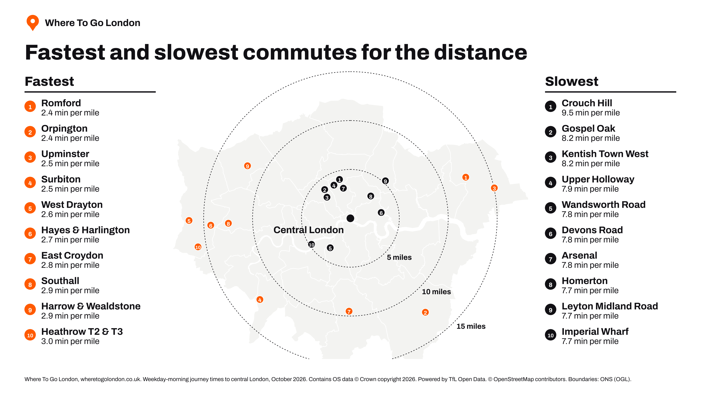
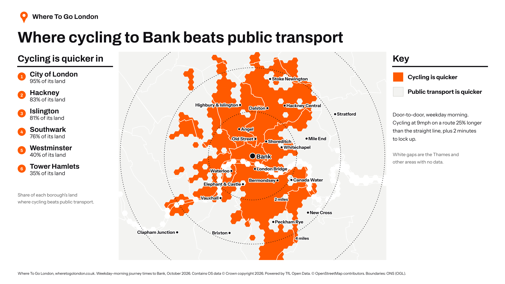

New data reveals the best and worst places in London to commute from
The short answer
Romford, Orpington, Upminster and Surbiton are the fastest places in London to commute from for the distance, which makes them worth a look if you’re thinking of moving further out. Crouch Hill, Gospel Oak and Kentish Town West are the slowest.
Where To Go London analysis of journey times from every station in the capital shows that living further out doesn’t always mean a longer commute. The quickest routes into central London depend on a fast train straight in, and the slowest on having to change on the way.

Fastest for the distance
Four stations get you into central London faster than any others for how far out they are: Romford, Orpington, Upminster and Surbiton. All four are a long way out, yet journeys take under 40 minutes. The common factor is a fast train into a major London terminus with a short onward connection.
If you’re weighing up where to move, these are the places where going further out doesn’t cost you time. Orpington is quicker than Beckenham Junction, which is nearly five miles closer to the centre. West Drayton shows the same pattern on the Elizabeth line, with a journey of well under an hour from more than 16 miles out.
Why it’s worth looking further out
When the train is fast, the extra distance costs very little time, and homes further from the centre are often cheaper. That makes the stations that are fastest for the distance the obvious place to start if you want more for your money without a longer journey. A place that looks far away on the map can be quicker to commute from than one that looks close.
Slowest for the distance
The slowest for the distance are Crouch Hill, Gospel Oak, Kentish Town West and Upper Holloway. All are within about four miles of the centre, and all take around half an hour or more. Crouch Hill is the slowest of them all.
Most of the slowest stations sit on Overground lines that loop around London rather than run into the centre, so a journey usually starts with a change or a walk to another station. At Kentish Town West and Upper Holloway the fastest route begins on foot, to Chalk Farm and Archway. Residents of Crouch Hill live about a third of the distance from the centre that Orpington residents do, and have a longer journey. If you’re looking at homes in these areas, test the real journey before you commit.
Neighbouring stations can differ widely
The gap shows up between neighbours. Surbiton residents reach central London almost 20 minutes faster than Kingston residents, even though Kingston is a mile closer. Surbiton’s trains run fast, while Kingston’s stop all the way to Waterloo.
Where cycling is quicker
On about 6% of London’s land, cycling is quicker than public transport. It is concentrated in Hackney, Islington and Southwark, where the bike is the faster option across most of each borough. These areas are close to the centre but short of direct lines in, so residents often get there sooner on two wheels than on a train. In Westminster and Tower Hamlets the bike wins across more than a third of the borough.

What this means for where you live
When you’re choosing where to live, the line a station sits on is a better guide to your commute than its distance from the centre. Across London, only about a third of the land is within 45 minutes of the centre, and about three-quarters is within an hour. By borough, Tower Hamlets has the shortest typical commute and Hillingdon the longest, with no part of Hillingdon within 45 minutes.
Check your own commute
The interactive map shows the journey from any spot in London, with the time for every station.
Times are door to door for a normal weekday morning, worked out from TfL open data and National Rail timetables, and accurate to within a few minutes. Cycling times assume an average speed of 9mph plus two minutes to lock up. They leave out delays, strikes and engineering works. Rankings cover stations at least three miles from the centre. The full method is on the map page.